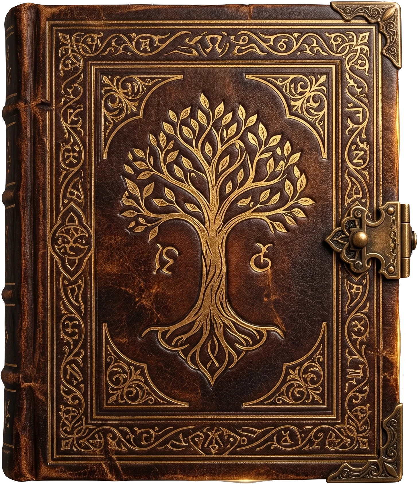

🌙 Active Read

Tome Reflections & Annotations
🔮 Current Atmosphere
✨ Favorite Lines
- No favorite lines inscribed yet. Leave the first mark below.
📜 Reader Notes
Spiral Waypoints
Reading Milestones
Select a waypoint to synchronize the circle's active reading position.
Circle Gathering
⚖️ Trial of the Circle
A short questionnaire about the whole tome, answered together when the circle gathers.
The Archivist has not yet forged this tome's trial.
No reader notes yet. Share your thoughts below.